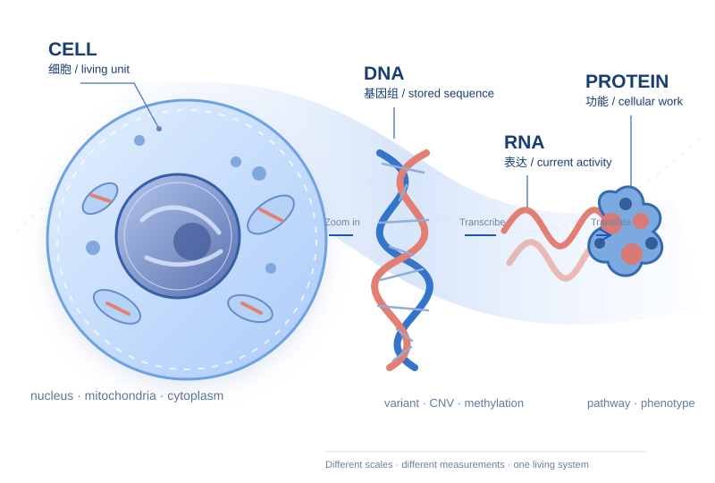

PROGRAM + PORTAL
TCGA via GDC
跨癌种肿瘤分子与临床资料。入门可从一个癌种、一个分子层开始；样本并非每种 assay 都齐全。
From code to cells.
给完全没有生物背景、正在进入 computational biology 的你：用 10 门课程、69 章，从生命的物质基础逐步走到 Genetics、细胞、多组学、空间技术、测序原理与计算数据实战。
研究方向可并行：肿瘤多组学 / TCGA · Visium HD / Xenium / CODEX · enhancer / splicing · 生物影像 · 数据建模

69 章可以按学科系统学习。零基础读者先走下面这条短路线，反复追问：材料是什么、测了什么、文件里的数是什么。
从一份肿瘤组织出发，沿 DNA / RNA / 蛋白的生物过程走到测量、文件、数值和病例级分析。每一步都要能解释观测单位与推断边界。先玩三个互动模型 ↗
不要一上来背通路名。先把研究对象看清楚：一个人的肿瘤由组织组成，组织里有多种细胞；细胞内有分子，分子之间的相互作用会改变细胞行为。[3]
DNA 是储存遗传信息的分子；chromosome / 染色体 是 DNA 与蛋白质组成的结构；genome / 基因组 指一个细胞里的整套 DNA 信息；gene / 基因 是其中具有功能信息的区域。它们是不同层级，不能互换。[1] [8] [6] [9]
“组学”通常是大规模测量某一类分子或特征。先记住每种技术的观测对象、单位和盲点，再学工具。下面的表是入门抽象；具体文件格式和实验设计会随平台改变。[7] [13]
| 层 / Modality | 测到什么 | 常见数据形状 | 不能直接说明 |
|---|---|---|---|
| Genomics 基因组学 | DNA 序列、体细胞变异、拷贝数 | variant × sample；segment × sample | 变异是否真的改变功能[7] |
| Epigenomics 表观组学 | 甲基化、染色质或调控相关信号 | CpG/region × sample | 单个标记与表达之间的因果[12] |
| Transcriptomics 转录组学 | RNA 的种类与丰度 | gene/transcript × sample | 蛋白量与细胞组成[5] |
| Proteomics 蛋白质组学 | 蛋白或肽段的鉴定、丰度、修饰 | protein/peptide × sample | 所有蛋白的完整覆盖[17] |
| Single-cell 单细胞 | 每个细胞的表达或其他特征 | cell × gene；细胞 metadata | 细胞空间位置（若无空间测量）[18] |
| Spatial / imaging 空间与影像 | 细胞/组织位置、形态、像素强度 | image × channel × x × y；ROI | 所有分子机制[19] |
表达矩阵中的每个值都依赖于样本定义、实验平台、预处理和归一化。先读 metadata，再做模型。列名中一个 ID 的层级可能是 patient、sample、aliquot 或 cell。
Bulk RNA-seq 把一块组织里的 RNA 合在一起读；single-cell RNA-seq 把读数分配给单个细胞，帮助辨认细胞类型和状态；spatial transcriptomics 再把信号放回组织坐标。三者回答的问题不同，分辨率也各有代价。[5] [25] [26]
适合研究群体差异，但基因表达改变可能来自细胞比例变化，也可能来自细胞内状态变化。
gene × tissue sample可以发现少数细胞群和细胞状态；组织位置通常在解离时丢失，且需要质量控制和注释。
cell × gene + metadata把分子信号与组织结构联系起来；测量单位可能是 spot、区域或单细胞，须看平台说明。
location × gene + x/y先找“资源的角色”，再找下载按钮：有的是研究项目，有的是提交型仓库，有的是原始 reads 档案，也有的是影像集合。以下链接直达维护机构的官方页面。[14] [13] [15]
显示全部 10 个资源
跨癌种肿瘤分子与临床资料。入门可从一个癌种、一个分子层开始；样本并非每种 assay 都齐全。
研究者提交的功能基因组学实验；常有 series、sample、platform 等层级，可找到 bulk 与 single-cell 研究。
高通量测序原始 reads 与比对信息的档案；适合需要重新做上游处理时查找。
跨非疾病组织的基因表达与遗传调控参考；做肿瘤比较时要注意来源、组织和处理差异。
功能性基因组元件与调控实验数据；适合解释非编码区域、转录调控和染色质信号。
可按组织、疾病、assay 等 metadata 搜索、探索和下载单细胞数据集。
质谱蛋白质组数据与证据；与 RNA 数据并读时要先核对样本和平台。
已发表生命科学研究的多维影像及注释；适合显微影像、细胞表型和方法验证。
去标识化的癌症医学影像集合，常见 CT、MRI、数字病理与相关标注。
人类性状与基因组变异的关联研究索引及部分 summary statistics；关联不自动等于因果。
示例问题：在一个指定癌种中，某基因的表达与临床结局是否相关？先把“可分析的 cohort”定义清楚，再写模型。TCGA 是研究项目，GDC 提供访问与协调处理后的数据。[14] [7]
指定癌种、样本类型、暴露变量、结局和预期混杂因素。不要从一个显著 p 值倒推问题。
区分 case / 病例、sample / 样本、aliquot / 分装物、file / 文件。多个文件不代表多个独立病人。[23]
在 GDC 选项目、primary tumor 或 matched normal、assay 和可用临床字段；记录纳排标准和缺失情况。[7]
按明确的 ID 层级对齐 RNA、变异、甲基化与临床资料；不同组学的样本交集可能变小。检查参考基因组与处理版本。[24]
检查批次、组织来源、肿瘤纯度、缺失和多重检验；对结局模型核对随访与删失定义。寻找独立队列或实验支持。
先看一个可核对的输入：逐行读一份公开 TCGA-BRCA STAR counts 文件 ↗。再用 四份真实文件拼出两位病例的配对小队列 ↗，练习筛选、连接、读数单位与推断边界。这是经过选择的教学子集，不代表可做组间统计的完整队列。
“表达与生存相关”只是 association，不证明该基因驱动疾病，也不等于临床可用 biomarker。GDC 也将其数据定位为研究探索。[7]
你的编程、统计和建模能力已经很有价值。优先补齐这些“从数据返回生物问题”的接口。
unstranded 列、TPM 列分别是什么。简短解释用于入门；点击术语可查看原始定义或数据库文档。
具有功能信息的 DNA 区域，可编码蛋白或功能性 RNA。
细胞中的整套 DNA 指令。
DNA 序列改变；注意胚系与体细胞来源。
通过测序估计 RNA 的种类与丰度。
参与调控基因组使用方式的化学标记集合。
可以观察到的特征，不由 DNA 单独决定。
追踪项目、病例、样本、分析物和 aliquot 等层级的标识。
GEO 的 series / sample / platform 记录类型。
寻找基因组变异与性状统计关联的研究设计。
医学影像及其元数据的常见标准格式。
文字为教学性改写；页面中的科学图解均为本站原创示意，没有复用第三方图像。
来源核对：2026-09-20。数据库界面、文件类型与使用条件会更新，开展研究时请以对应项目文档和数据 release 为准。